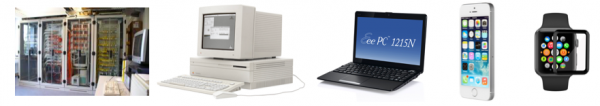

Digitalisierung endlich verständlich
Ein Rätsel geht um in Deutschland: Was ist Digitalisierung? Die Digitalisierung ist in aller Munde, manchmal als Hoffnungsträgerin, manchmal als Bedrohung. Was die Digitalisierung aber genau ist, das wird bei all dem Begriffs- und Technologiefeuerwerk nur selten klar.
Mein Verständnis von Digitalisierung
Da ich mich als Digital Change Agent verstehe, d.h. als Unterstützerin bei der Digitalisierung in Organisationen, ist mir daran gelegen, in dieser Hinsicht maximales Verständnis zu erzielen. Sonst wissen Sie nicht, worum es geht, wo die Chancen liegen und wie ich Ihnen dabei zur Seite stehen kann. Allemal, da ich nun auch akkreditiere und
Beraterin der BMWi-Initiative go-digital bin, mit der Unternehmen Fördergelder für ihre Digitalisierung in Anspruch nehmen können.
Erfolgreiche Digitalisierung kann es aus meiner Sicht nur geben, wenn der Begriff glasklar ist. Sie müssen einfach erkennen können, was dazu gehört und was nicht. Deshalb möchte ich Ihnen hier meine bescheidene Definition vorstellen und erklären:
Digitalisierung ist, wenn Software den Unterschied macht
Der Kontext für die Definition ist ein Unternehmen oder allgemeiner eine Organisation. Digitalisierung ist darin ein Mittel, um die (Über)Lebensfähigkeit des Unternehmens zu verbessern. Vielleicht steigert Digitalisierung den Umsatz oder sie senkt Kosten oder sie erhöht die Mitarbeitermotivation oder sie macht flexibler oder oder oder. Die positiven Effekte können vielfältig sein.
In jedem Fall ist es aber so, dass die positiven Effekte für das Unternehmen durch Software erzielt werden sollen. Nur dann spricht man von Digitalisierung.
Software einsetzen, wo bisher keine im Einsatz war; eine andere Software einsetzen als bisher oder Software in größerem Umfang oder intensiver nutzen… Wenn auf diese Weise etwas besser werden soll für das Unternehmen, wenn Software kausal direkt oder indirekt verantwortlich sein soll für gewünschte Entwicklungen, spricht man von Digitalisierung.
Digitalisierung: Neuer Wein in alten Schläuchen?
Sie mögen sich nun fragen, ob Digitalisierung dann nicht schon ein alter Hut sei. Computer mit Software gibt es doch schon mit einiger Verbreitung seit 40-50 Jahren in Unternehmen.
Da haben Sie recht. Genau genommen ist die Digitalisierung schon seit Jahrzehnten im Gange. Aber etwas hat sich in den letzten ca. 5-10 Jahren verändert, das nun dazu geführt hat, davon so explizit zu sprechen.
Früher hat man von Automatisierung oder Computerisierung gesprochen. Den Unterschied vor 20 oder 40 Jahren hat sichtbar nicht Software, sondern Hardware gemacht. Vorher gab es keine Computer, dann gab es Computer. Auf denen war das eine oder andere Programm installiert, mit dem man gearbeitet hat. Das hat auch einen hoffentlich positiven Unterschied gemacht. Nur lag eben der Fokus auf dem Gerät. Das war teuer und die Anschaffung musste wohl überlegt werden.
Miniaturisierung kennt keine Grenzen
Diese Zeiten sind nun vorbei. Das macht den Wandel zu einem anderen Begriff aus. Spätestens mit dem Smartphone sind Computer keine Spezialgeräte mehr, deren Benutzung an besondere Orte gebunden ist. Nein, jetzt sind Computer auch noch Computer, die nicht auf einen Zweck festgelegt sind, überall zu finden. Buchstäblich in jeder Hosentasche und in jeder Handtasche findet sich ein Gerät, das leistungsfähiger ist, als was noch vor 15 Jahren ein Klotz unter einem Schreibtisch war.

Soweit das sichtbare Ergebnis der Computerisierung. Unsichtbar sind die Millionen weiteren Computer, die in Internet-Rechenzentren gestapelt sind oder in Geräten jeder Art „den Takt angeben“. Die Miniaturisierung kennt keine Grenzen. Computer breiten sich in alle Dinge des Lebens aus. Man spricht in dem Zuge auch vom Internet of Things, denn die computerisierten Dinge sollen dann auch noch miteinander verbunden werden. Sie haben sicher auch schon die Idee vom Kühlschrank gehört, der automatisch einkauft, wenn er bemerkt, dass etwas fehlt. Doch das ist nur plakativ und auch nur der Anfang.
Für diesen ungebrochenen, gar beschleunigten Trend der Ausbreitung von Computern in alle Lebensbereiche würde ich den Begriff Digitalisierung allerdings nicht gebrauchen. Es geht weiterhin „nur“ um Computerisierung.
Digitalisierung ist ein Trend, der sich darauf huckepack entwickelt hat. Für ihn sind die ausschwärmenden vernetzten Computer nur das Substrat. Sie sind notwendig, doch am Ende nicht das Wesentliche.
Digitalisierung folgt auf die Computerisierung als nächste Welle, indem sie die engmaschiger werdende Matrix der Computer mit Software bevölkert.
Die Frage an Unternehmen früher lautete: „Benutzt ihr schon Computer?“
Die Frage an Unternehmen heute hingegen lautet: „Welche Software benutzt ihr?“
Dass Computer benutzt werden, steht außer Frage. Deshalb werden sie zusehends unsichtbarer. Die Aufmerksamkeit konzentriert sich darauf, wie sie genutzt werden, welche Software darauf läuft.
Software macht den Unterschied
Marc Andreessen, der Mitgründer eines der ersten berühmten Internetunternehmen (Netscape) hat gesagt:
Software is eating the world.
Das hört sich emotional und gefährlich an, ist aber nicht zu leugnen. Der Begriff Digitalisierung lässt es nur nüchterner klingen.
Ein Unternehmen kann einen guten Effekt für sich erzielen, indem es im Vertrieb auf Provisionen verzichtet. Es kann sich positiv entwickeln, indem es mit seinen Lieferanten fairer umgeht. Oder in der Produktion setzt man auf Methoden der Lean Production. Die Personalabteilung verstärkt die Fortbildung für die Mitarbeiter. Oder man stellt auf eine soziokratische Organisation um. Oder die Kosten für die Kompensation von Mitarbeiterfluktuation werden durch einen Firmenkindergarten gesenkt. Es gibt unzählige Wege, Unternehmen (über)lebensfähiger zu machen, die nichts mit Software zu tun haben. Dann geht es immer noch um Veränderung, ein Change Prozess ist womöglich angezeigt, doch mit Digitalisierung hat es nichts zu tun.
Sobald jedoch Software ins Spiel kommt, durch die ein positiver Effekt eintreten soll, die also den Unterschied ausmacht zwischen bisherigem und zukünftigem Erfolg, dann gehört die Veränderung ins Reich der Digitalisierung.
Praxisbeispiele für Digitalisierung..
Wenn Sie dabei sind, eine ERP-Software wie SAP oder BORM einzuführen, dann befinden Sie sich in einem Digitalisierungsprozess. Wenn der Vorstand in Zukunft die Unterlagen für das nächste Meeting auf dem iPad in PDF Expert vorliegen haben will, statt in einer Papiermappe, dann ist das Digitalisierung. Soll ein internes Wiki zur Dokumentation von Wissen aller Art eingesetzt werden, handelt es sich um Digitalisierung. Sogar wenn Sie sich in Zukunft noch zu erledigende Emails nicht mehr ausdrucken, sondern mit einem Fähnchen in Outlook markieren, sind Sie schon in die Digitalisierung eingestiegen.
Es gibt kein Halten mehr. Excel und Outlook waren erst ein Anfang, ein Vorgeschmack auf das, was noch kommt. Das Ende der Fahnenstange ist nicht damit erreicht, dass die Firma schon eine Email-Adresse hat und eine Homepage.
Digitalisierung bedeutet: Jetzt geht es los, dass alles, aber auch wirklich alles im Unternehmen daraufhin abgeklopft wird, ob es irgendwie mit dem Einsatz von Software noch besser gehen könnte.
Insofern wird jedes Unternehmen zu einem Softwareunternehmen. Das bedeutet, ein Unterschied in der Wettbewerbsfähigkeit zeigt sich dadurch, dass mit Software clever umgegangen wird. Produkte, die bisher keine Software enthielten, werden mit Software ausgestattet. Bei Produkten, die schon Software enthielten, steigt die Priorität der Qualität dieser Software. Und auch in Produktion und Administration wird Software zum unverzichtbaren Werkzeug.
Digitalisierung passiert nicht nebenbei
Wenn sich das auch bei solch nüchternem Begriff verunsichernd, gar beängstigend anhört, kann ich das verstehen. Digitalisierung ist kein Kinderspiel. Die macht sich nicht nebenbei. Deshalb begrüße ich auch die Initiative des BMWi, dabei zu unterstützen. Organisationen brauchen Hilfe, um in dieses Metier schnellstmöglich einzusteigen.
Allerdings darf man Digitalisierung nicht als Hürde sehen, die überwunden werden kann. Es gibt keine Zeit nach der Digitalisierung. Wer einsteigt, bleibt darin. Dass Software einen, nein, den Unterschied macht, ist nicht mehr wegzudenken.
Digitalisierungskompetenz ist daher eine Grundkompetenz jedes Unternehmens und jedes Mitarbeiters. Sie macht vor keiner Aufgabe und keiner Position halt.
Bitte verstehen Sie mich nicht falsch, damit will ich nicht sagen, dass alle Unternehmen ein Instagram-Konto bräuchten und jeder Mitarbeiter ständig per Slack erreichbar sein müsste. Auch bei der Digitalisierung gibt es Irrwege und Hypes.
Ich meine es viel grundsätzlicher. Dass eben überhaupt Software diese Rolle spielt. Dass auch die Unternehmen, die glaubten, sie hätten nichts mit Computerprodukten oder Software am Hut jenseits des Offensichtlichen wie Word oder Excel oder Homepage sich nicht mehr der „Fressmaschine“ entziehen können. Der Softwareeinsatz wird für alle Organisationen – Bäcker, Juwelier, Pflegeheim, Restaurant, Gewerkschaftsbüro usw. usf. – zum Differentiator.
Das ist keine leichte Sache. Deshalb unterstütze ich Sie auch gern. Man verliert sich schnell im Irrgarten der Möglichkeiten. Doch Digitalisierung ist leider alternativlos. Software gekonnt insbesondere auch in der Administration einsetzen, das wird zukünftig den Unterschied zwischen Erfolg und Misserfolg ausmachen.
Um nicht mehr und nicht weniger geht es bei der Digitalisierung.
Weitere Artikel

Regeln für KI im Office
ChatGPT & Co haben sich schnell in die Herzen und Alltag von vielen Menschen im Berufs- und Privatleben gespielt. Diese neuen Werkzeuge eröffnen uns viele Chancen, nicht nur effizienter zu werden, sondern auch kreativer. Aber …

KI als Copilot für die Assistenz
KI in Form von ChatGPT & Co sind hervorragende neue Werkzeuge im Office-Alltag, um produktiver und ja, auch kreativer, zu werden. Neugier statt Angst ist angezeigt im Umgang mit diesen Werkzeugen, die wie andere Werkzeuge auch …